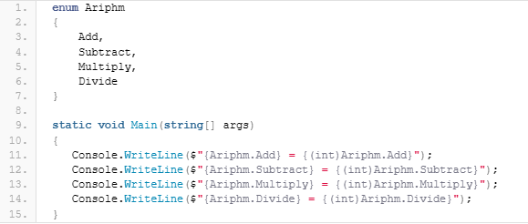

Содержание
Перечисление (enum) — это пользовательский тип данных, представляющий собой набор именованных целочисленных констант. Чтобы объявить перечисление enum в своем приложении необходимо использовать ключевое слово enum и придерживаться следующего правила:
enum Название_типа : целочисленный_тип
{
имена_констант_через_запятую
}
Вначале идет ключевое слово enum, которое указывает на то, что тип данных относится к перечислениям. Далее идет Название_типа — это может быть любая строка допустимая для использования в именах переменных C#. После названия через двоеточие указывается тип данных для констант в перечислении, если тип не указан, то по умолчанию используется тип int. И, наконец, в фигурных скобках через запятую указываются имена констант для перечисления. Например, ниже представлено перечисление, содержащее дни недели:
enum Days
{
Monday,
Tuesday,
Wednesday,
Thursday,
Friday,
Saturday,
Sunday
}
Как использовать перечисления enum в своих приложениях? Мы уже научились объявлять и использовать собственные методы в C# и даже написали небольшую программку по сложению чисел. А что делать, если мы захотим не только складывать, но и вычитать, умножать и делить числа? Можно, конечно, на каждую операцию написать отдельный метод, а можно использовать перечисления и организовать выполнение арифметических операций всего в одном методе. Объявим перечисление, в котором каждая константа будет хранить информацию по арифметической операции:
enum Ariphm
{
Add,
Subtract,
Multiply,
Divide
}
Теперь напишем вот такой метод:
static double DoOperation(double a, double b, Ariphm operation)
{
return operation switch
{
Ariphm.Add => a + b,
Ariphm.Divide => a / b,
Ariphm.Multiply => a * b,
Ariphm.Subtract => a - b,
_ => throw new Exception("Неизвестная операция")
};
}
Здесь мы использовали выражение switch (доступно с версии C# 8.0) и, в зависимости от того, какое из значений перечисления Ariphm передает пользователь в метод DoOperation выполняется свое действие над переменными. Например, можно вызвать метод вот так:
static void Main(string[] args)
{
double c = DoOperation(10, 3, Ariphm.Divide);
Console.WriteLine(c);
}
Вывод консоли:
3,3333333333333335
Это достаточно простой пример использования перечислений enum в C#. Теперь разберемся с enum более подробно.
В самом начале было сказано, что enum — это, по сути, набор именованных целочисленных констант. Но, какие значения имеют константы, например, в выше приведенном перечислении для выполнения арифметических операций? По умолчанию связанные значения констант элементов перечисления имеют тип int. Они начинаются с нуля и увеличиваются на единицу в соответствии с порядком текста определения. Чтобы убедиться в этом, достаточно написать, например, вот такой код:

и увидеть в консоли следующее:
Add = 0
Subtract = 1
Multiply = 2
Divide = 3
При этом, мы можем изменить значения констант как нам угодно (но только в рамках используемого для констант типа данных). Например, мы можем задать вот такие значения для наших констант:
enum Ariphm
{
Add = 10,
Subtract = -10,
Multiply = 20,
Divide = -20
}
Можем указать свой собственный тип данных для констант:
enum Ariphm : short
{
Add = 10,
Subtract = -10,
Multiply = 20,
Divide = -20
}
При этом, если мы попробуем определить вот такой тип перечисления:
enum Ariphm : byte
{
Add = 10,
Subtract = -10,
Multiply = 20,
Divide = -20
}
то компилятор C# выдаст нам ошибку
Использование перечислений enum в C# может носить самый разнообразный характер, например, для хранение состояния какого-либо объекта в программе или, как в нашем случае, для указания типа операции над парой чисел. В любом случае, перечисления помогают нам сделать код программы более понятным. Согласитесь, что, вот такой вызов метода:
DoOperation(10, 3, Ariphm.Divide);
Намного понятнее, чем:
DoOperation(10, 3, -20);
а если учесть, что во втором случае пользователь может вызвать метод и вот так:
DoOperation(10, 3, -134);
то использование перечислений позволяют сделать код не только более понятным, но и устойчивым к возможным ошибкам со стороны пользователя.